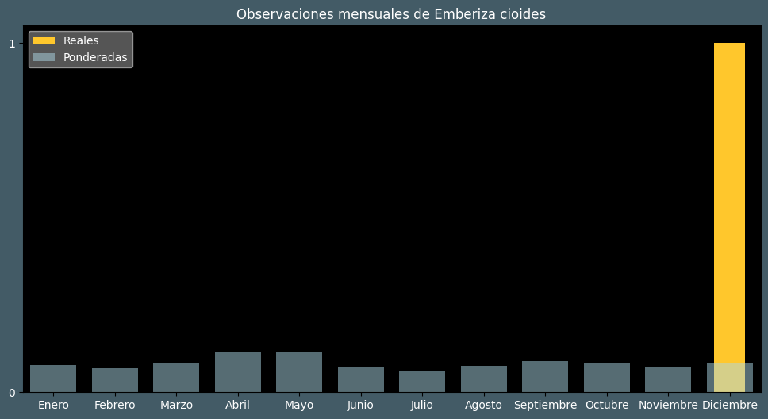

Observaciones por mes
Observations por hora

Categoría IUCN: ?
Género: Emberiza
Familia: Emberizidae
Orden: Passeriformes
Descubrimiento: von Brandt (1843)
| Idioma | Nombre |
|---|---|
| Afrikaans (af) | ? |
| Arabic (ar) | ? |
| Belarusian (be) | ? |
| Bulgarian (bg) | Мустаката овесарка |
| Catalan (ca) | Sit mostatxut |
| Chinese (zh) | 三道眉草鹀 |
| Chinese traditional (zh-TW) | 草鵐〔三道眉草鵐〕 |
| Croatian (hr) | Livadna strnadica |
| Czech (cs) | Strnad čínský |
| Danish (da) | Engværling |
| Dutch (nl) | Weidegors |
| English (en) | Meadow bunting |
| Estonian (et) | Kingutsiitsitaja |
| Finnish (fi) | Niittysirkku |
| French (fr) | Bruant à longue queue |
| German (de) | Wiesenammer |
| Greek (el) | ? |
| Hebrew (he) | גיבתון חום-חזה |
| Hungarian (hu) | Mezei sármány |
| Icelandic (is) | Teigtittlingur |
| Indonesian (id) | ? |
| Italian (it) | Zigolo campestre |
| Japanese (ja) | ホオジロ |
| Korean (ko) | 멧새 |
| Latvian (lv) | Pļavu stērste |
| Lithuanian (lt) | Ilgauodegė starta |
| Maceodnian (mk) | ? |
| Malayalam (ml) | ? |
| North_sami (se) | Niitocihci |
| Norwegian (no) | Engspurv |
| Persian (fa) | ? |
| Polish (pl) | Trznadel łąkowy |
| Portuguese (pt) | Escrevedeira-de-touca-castanha |
| Russian (ru) | Красноухая овсянка |
| Serbian (sr) | Livadska strnadica |
| Slovak (sk) | Strnádka hnedá |
| Spanish (es) | Escribano de brandt |
| Swedish (sv) | Ängssparv |
| Thai (th) | ? |
| Turkish (tr) | Çayır çintesi |
| Ukrainian (uk) | Вівсянка чорновуса |